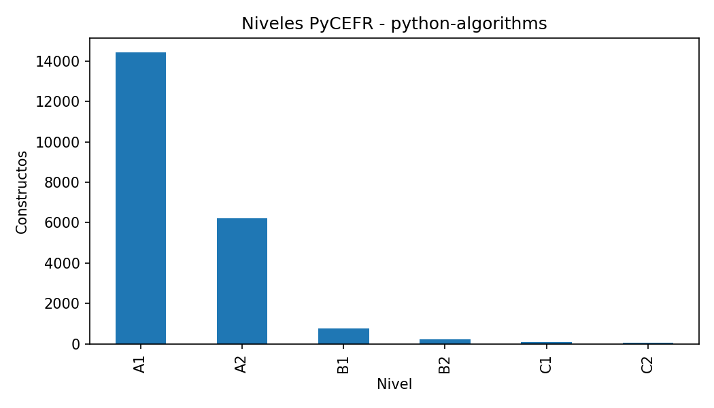
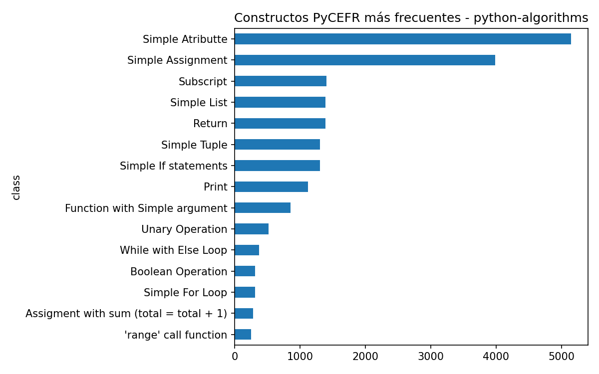
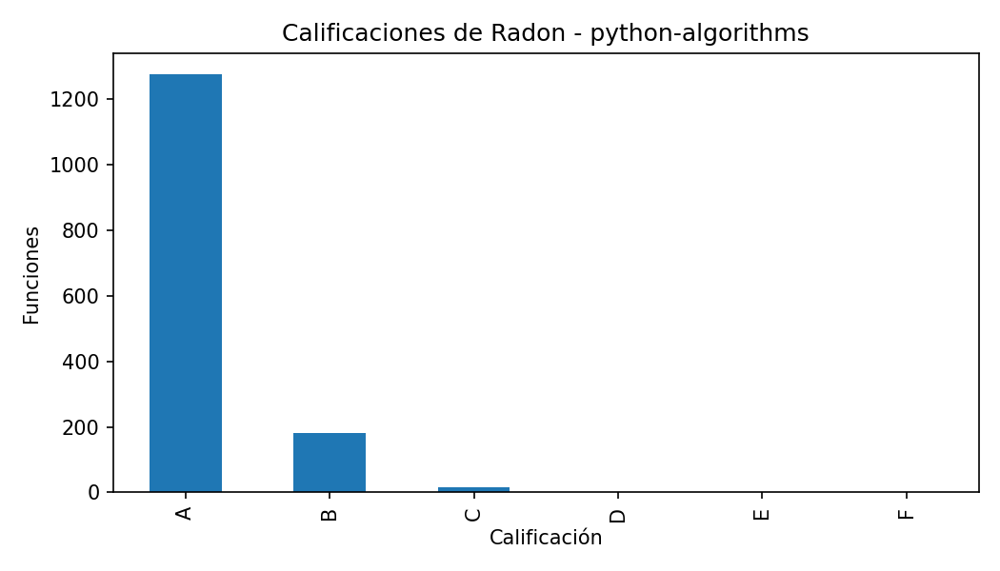
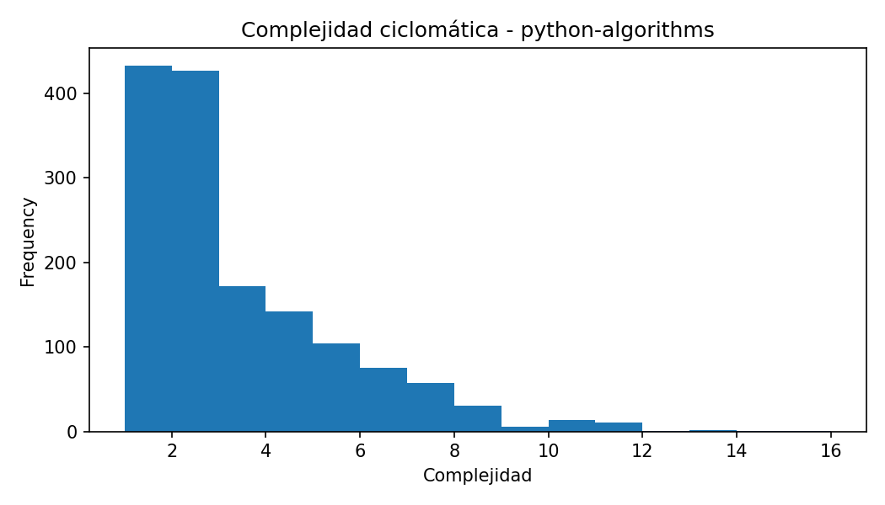
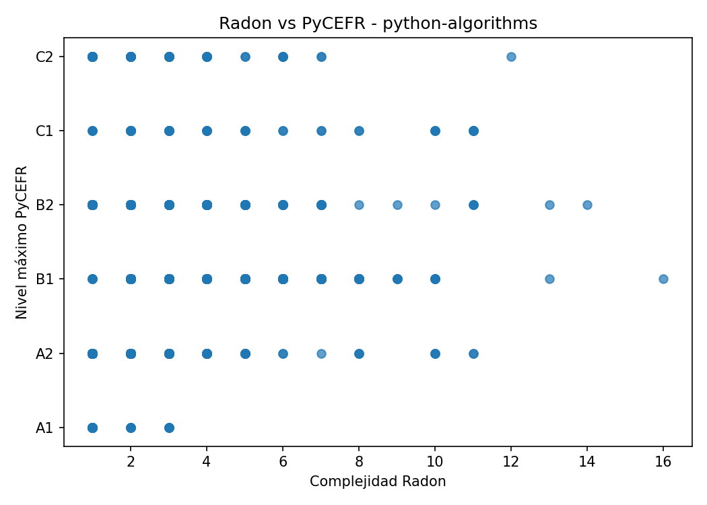

Constructos PyCEFR detectados: 21724
Clases PyCEFR distintas: 57
Nivel máximo PyCEFR: C2
Funciones Radon detectadas: 1474
Complejidad máxima Radon: 16.0
Calificación máxima de Radon: C
Casos interesantes detectados: 232
Este caso contiene funciones donde las herramientas muestran patrones de coincidencia o discrepancia. Estos ejemplos son candidatos para comentarse en la memoria.
| class | count |
|---|---|
| Simple Atributte | 5147 |
| Simple Assignment | 3987 |
| Subscript | 1405 |
| Simple List | 1390 |
| Return | 1386 |
| Simple Tuple | 1308 |
| Simple If statements | 1307 |
| 1120 | |
| Function with Simple argument | 856 |
| Unary Operation | 521 |
| file_name | name | complexity | radon_grade | lineno | endline |
|---|---|---|---|---|---|
| is_bst_ordered.py | is_bst_ordered | 16 | C | 25 | 51 |
| avl_tree.py | deleteNode | 14 | C | 190 | 222 |
| alien_dictionary.py | find_order | 13 | C | 18 | 59 |
| merge_two_binary_trees.py | mergeTreesHelper | 13 | C | 9 | 23 |
| median_in_sorted_arrays.py | merge_arrays | 12 | C | 13 | 48 |
| course_scheduling_order.py | find_order | 11 | C | 12 | 46 |
| detect_cycle_bfs.py | is_cycle | 11 | C | 6 | 29 |
| binary_heap.py | heapifyExtract | 11 | C | 70 | 101 |
| find_cycle.py | topological_sort | 11 | C | 13 | 47 |
| topological_sort.py | topological_sort | 11 | C | 13 | 48 |
| file_name | function | complexity | radon_grade | max_level | n_pycefr_constructs | case_type |
|---|---|---|---|---|---|---|
| bellman_ford_algorithm.py | bellmanFord | 8 | B | A2 | 61 | Radon alto / PyCEFR bajo; Muchos constructos simples acumulados |
| dijkstras_algorithm_with_min_heap.py | dijkstra | 5 | A | C1 | 46 | PyCEFR alto / Radon bajo |
| dijkstras_algorithm_with_sorted_set.py | dijkstra | 6 | B | C1 | 60 | Coincidencia en dificultad alta |
| kosarajus_algorithm.py | transpose_graph | 4 | A | C1 | 28 | PyCEFR alto / Radon bajo |
| topological_sort_bfs.py | topological_sort | 10 | B | C1 | 40 | Coincidencia en dificultad alta |
| floyd_warshall_algorithm.py | floyd_warshall | 11 | C | A2 | 44 | Radon alto / PyCEFR bajo; Muchos constructos simples acumulados |
| quick_sort.py | quick_sort_helper | 7 | B | B2 | 21 | Coincidencia en dificultad alta |
| kadanes_algorithm.py | kadanes_algorithm_2 | 5 | A | A2 | 26 | Muchos constructos simples acumulados |
| two_sum.py | two_sum | 3 | A | C2 | 39 | PyCEFR alto / Radon bajo |
| reverse_linkedlist.py | reverse_list | 2 | A | C1 | 30 | PyCEFR alto / Radon bajo |
| subtree_of_another_tree.py | same_tree | 7 | B | B2 | 33 | Coincidencia en dificultad alta |
| lca_bst.py | lca_bst | 6 | B | B2 | 29 | Coincidencia en dificultad alta |
| construct_binary_tree_from_preorder_inorder_traversal.py | construct_tree | 2 | A | C2 | 38 | PyCEFR alto / Radon bajo |
| same_tree.py | same_tree | 7 | B | B2 | 24 | Coincidencia en dificultad alta |
| max_product_brute_force.py | max_product | 4 | A | A2 | 34 | Muchos constructos simples acumulados |





Este informe se genera automáticamente. Las conclusiones finales deben revisarse manualmente para comprobar que los ejemplos seleccionados son representativos y adecuados para la memoria.